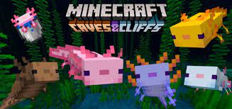
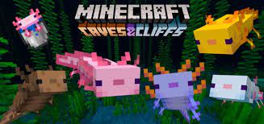

Спаун


Аксолотль
Аксолотль, или (англ. Axolotl), — это дружелюбный моб, обитающий в воде

Аксолотль, или (англ. Axolotl), — это дружелюбный моб, обитающий в воде
Окрас, или цветовое решение,— цвет, который имеет шкура аксолотля
её оттенок ни на что не влияет.